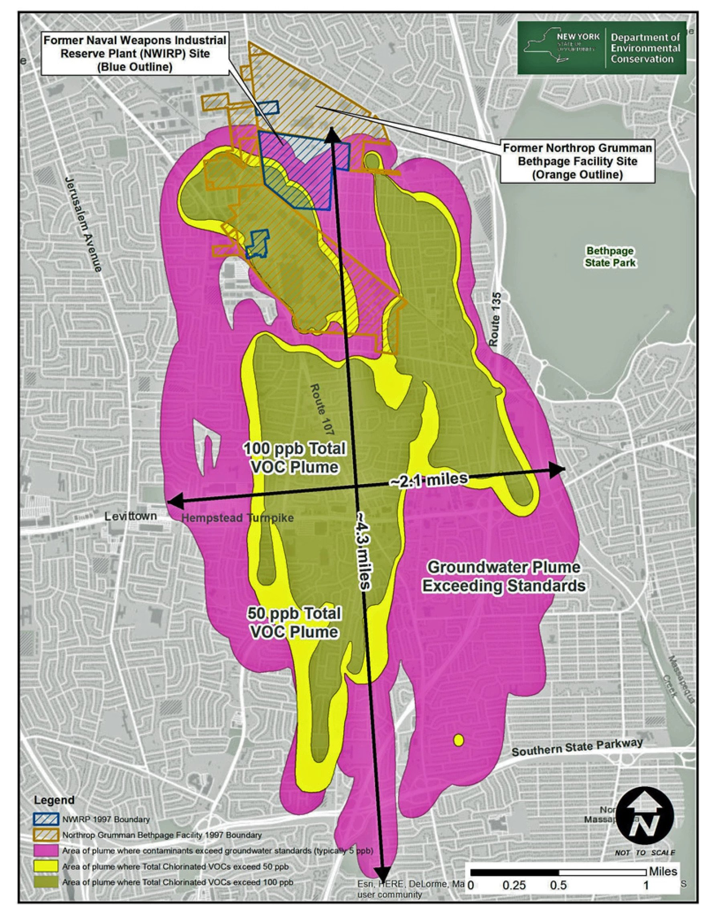

- a toxic plume
BETHPAGE NY 67.59.253.254
Northrop Grumman and the state of New York have put the final touches on a $104 million deal to clean up the Bethpage plume, Long Island’s largest groundwater contamination site.
The settlement, which awaits approval from a federal judge, includes tens of millions of dollars to the Bethpage and the South Farmingdale water districts to protect drinking water supplies. It also requires Northrop Grumman to contain the edges of the 4-mile-long, underground plume of chemicals to stop it from spreading further. State Attorney General Letitia James said in a statement that the settlement is about accountability.
"For decades, Northrop Grumman knew its hazardous waste disposal sites leaked toxic substances into the only source of drinking water on Long Island, but for decades, Northrop Grumman denied responsibility," James said. "Long Islanders have paid the price for the company's negligence but today, we're finally forcing Grumman to address its environmental abuse by paying the municipalities and the state that had to clean up its mess." The U.S. Navy and Northrop Grumman built military aircraft at the Bethpage plant from 1942 to 1996, including bombers that flew during the Vietnam War. Parts of the Apollo lunar space module that first brought Neil Armstrong and Buzz Aldrin to the moon were also built there.
Newsday revealed two years ago that officials at the plant knew the chemical pollutants were dangerous, but hid the threats to public health and the environment.
The plume contains about two dozen carcinogenic chemicals including trichloroethylene, or TCE, which came from the solvent that Grumman used to clean aircraft parts.
- a 4 billion dollar casino
HEMPSTEAD NY 67.83.222.20
EAST MEADOW, NY — The Las Vegas Sands Corporation has entered into a deal to purchase the lease for the Nassau Coliseum and its surrounding property and, if approved by the state, build a casino on the site.
The company announced the multi-billion-dollar deal Thursday. It plans to build a large hospitality, entertainment and casino complex on the site.
"Our company's track record of driving significant economic benefits to the communities in which we operate and the meaningful relationships and partnerships we have created in each of those communities gives us a unique perspective on what it takes to develop transformative tourism destinations that positively impact the local community. Based on that experience, we strongly believe Long Island can be home to one of the region's great entertainment and hospitality developments," said Robert G. Goldstein, Sands chairman and CEO. "Our announcement today is only the first part of this journey. Our ability to put forward a compelling and competitive proposal will only succeed if we engage with the Long Island community and, in collaboration, develop a proposal that reflects the input of all those involved."
The drive for the casino comes from a decision by the state to add three casinos in the downstate area. A casino at the Hub area is still not a done deal. The state has said no determinations or licenses are expected until late 2023 at the earliest.
However, Sands has big plans for the site, regardless of whether a casino is approved. The resort portions of the site would include outdoor community space, four- and five-star hotel rooms and a performance venue that "honors the legacy" of performances at Nassau Coliseum. Sands said the resort would also feature celebrity chef restaurants, experiential events and flexible meeting and convention spaces. The casino, if approved, would be less than a tenth of the project's total square footage, Sands said. The Hub site in Uniondale was suggested to Sands by former Gov. David Paterson, who is a senior vice president with the Sands Corporation.
"I will always consider Hempstead my home, so it is with great pride that I have a leadership role working with this great community on this transformational project," he said. "We are committed to bringing opportunities for small businesses to thrive, career paths in multiple disciplines for our local residents, innovative approaches for minority and women-owned businesses, thousands of union jobs, and an understanding of our obligation to partner and communicate our vision for the future."
Sands said it will work with RXR Realty, which owns a large piece of property across the street from the Coliseum, to create a plan for the development that "maximizes economic opportunity, helps to build stronger communities, and protects the quality of life for all Long Islanders."
"After nearly two decades of working to transform the Nassau Coliseum site, including countless hours meeting with thousands of community members, the message has been overwhelmingly clear that Long Islanders want a global renowned entertainment destination that creates well-paying jobs and new opportunities at the Nassau Hub. But the challenge for turning this vision into reality has always been the commercial viability of a site encumbered by a nearly obsolete half-century-old arena," said Scott Rechler, CEO and chairman of RXR. "The plan envisioned by Sands is a once-in-a-generation opportunity to create the kind of world-renowned entertainment and hospitality destination that has been sought after by Long Islanders."
In recent years, the Nassau Hub has been the source of much debate and many different proposals. More than a decade ago, Rechler and former Islanders owner Charles Wang tried to get The Lighthouse Project built at the site. It would have redeveloped the Hub with a new sporting/entertainment venue, as well as a hotel and other amenities and businesses. That plan, however, was squashed by the Town of Hempstead, which has control of zoning of the parcel.
A few years later, Bruce Ratner took over the site and completely renovated the Coliseum, officially rebranding it NYCB Live, Home of the Nassau Veterans Memorial Coliseum. When the renovated Coliseum was revealed, Ratner said he hoped it would become "the Eiffel Tower of Long Island."
Under the Sands plan, it's unclear what would happen to the Coliseum. In announcing the plan, Sands said it would honor the site's legacy as a veteran's memorial and pay tribute to Long Island service members, but did not say what would become of the Coliseum itself.
"The entire Sands team is excited for the opportunity to help bring this vision to reality and we are ready to work in a serious and transparent manner with the local community in an effort to bring an exciting new industry to Long Island," said Goldstein.
- extreme heat
NEW YORK NY 64.15.4.76
In 2008, a disabled, wheelchair-bound man named Ellis Cooper died of heatstroke during an early June heat wave. His Brooklyn apartment complex had a central heating and air-conditioning system and because of it, the landlord prohibited tenants from using individual AC units. As provided by the law, the landlord supplied heat to the building through May 31 of each year, during Heating Season, and then afterward, changed the heat over to air conditioning. But the heat wave had occurred unseasonably early, before the landlord had been able to get the air conditioning going throughout the building.
The tenant’s family sued, in a case called Cooper vs. Starrett City Inc, claiming that the owner of the building was responsible for Cooper’s death.
The court ultimately sided with the landlord, who had gone about his usual routine of switching over to AC in early summer. The extraordinary event of an early summer heat wave was responsible for Cooper’s death, the judge determined —that, and Cooper’s inability to get to a cooling center. But these events are becoming ever less extraordinary, and if WE ACT’s research supports what many residents believe, access to cooling centers is not universal, nor universally understood. The case suggests that moving forward, New York may need to create a Cooling Season, too.
Back on the roof at 5-Boro, as I traipsed in the wake of Lerner, who was eager to show me its bees, the garden put off a grand energy. Its pungent air smelled like a forest after a rainstorm, and the faces of its solar panels turned skyward like hungry sunflowers. Life carried on below our feet in the building’s garage, mechanics tinkering with the fleet. There was no doubt that the cool temperature the roof provided mattered to the existence of the Department of Parks and Recreation employees below, just settling in to a day’s work. It was obvious in that moment just how non-negotiable the human right to cooler temperatures is: It’s the only way we will keep going as New Yorkers, as people on planet Earth.
An idea, a green roof, a collective of people willing to investigate issues of environmental justice, and an aggressive new law — these are all individual narratives in the bigger saga of New York as it faces climate change. There is a certain fearlessness here, there always has been, in its people and in the regulations used to protect them, from writing into law a landlord’s duty to provide a safe and livable environment for tenants to requiring building owners to make their properties more efficient, safeguarding the environment outside their walls as well.
New York has declared it for decades: A livable environment is a basic human right. It’s the same principle Teddy Roosevelt defended when he delivered ice to the city’s newest residents on the Lower East Side. And now, more than a century later, the idea is spreading. It’s why children sue our government for failing to act against climate change, and activists sue oil companies, claiming they’re liable for climate-related disasters. And it’s why other cities should take note: As our lives drift predictably city-ward, the buildings therein need to do more to protect us, both inside and out.
New York’s Climate Mobilization Act is so aspirational because it’s an attempt to hold power to account for the environment, one skyscraper at a time. The Empire State Building, decorated daily in lights, the Chrysler Building, eagles defending its art deco turrets, and even the narrow, looming tower on Central Park visible anywhere in the city, a compass for anyone in need of knowing which way is north — the buildings — they’ve always made New York New York. But it’s the people, ambitious and abundant, who bring it to life.
- "breaking point"
BRUSSELS BELGIUM 62.115.153.104
Thousands of people from the healthcare, welfare and culture sectors gathered in Brussels for a national demonstration on Tuesday. They are demanding more resources for the sector, as it is struggling with structural staff shortages and long waiting lists for patients.
The march set off shortly after 10:45 from the surroundings of the Brussels North station to join groups of protestors at the Midi/South station around 13:00. The unions, united in a national common front, want to denounce the structural shortage of personnel and the working conditions of nurses, caregivers, home helpers or staff of nurseries or institutions of youth support.
"No applause, but action this time," could be read on a number of signs from the participants, along with "Our care is great, but our patience is running out" and "The healthcare sector is sounding the alarm: Help, we are drowning."
Stretched too thin
This demonstration marks the second time this year the health and well-being sectors are taking to the streets, after a first mass rally at the end of January. The unions were expecting between 10,000 and 20,000 people on Tuesday.
The demonstrators denounced the low salaries, the unstable contracts, the exhausting working conditions and the shortage of personnel observed within the trades concerned.
The health and care sectors – already stretched thin even before the Covid-19 pandemic – are currently going through a deep crisis: jobs that are too exhausting (both physically and psychologically) and demanding, while often being overlooked. They no longer manage to attract young people, and students who do start a course must still train for years before actually being in the field.
- extreme heat
NEW YORK NY 64.15.4.76
In 2008, a disabled, wheelchair-bound man named Ellis Cooper died of heatstroke during an early June heat wave. His Brooklyn apartment complex had a central heating and air-conditioning system and because of it, the landlord prohibited tenants from using individual AC units. As provided by the law, the landlord supplied heat to the building through May 31 of each year, during Heating Season, and then afterward, changed the heat over to air conditioning. But the heat wave had occurred unseasonably early, before the landlord had been able to get the air conditioning going throughout the building.
The tenant’s family sued, in a case called Cooper vs. Starrett City Inc, claiming that the owner of the building was responsible for Cooper’s death.
The court ultimately sided with the landlord, who had gone about his usual routine of switching over to AC in early summer. The extraordinary event of an early summer heat wave was responsible for Cooper’s death, the judge determined —that, and Cooper’s inability to get to a cooling center. But these events are becoming ever less extraordinary, and if WE ACT’s research supports what many residents believe, access to cooling centers is not universal, nor universally understood. The case suggests that moving forward, New York may need to create a Cooling Season, too.
Back on the roof at 5-Boro, as I traipsed in the wake of Lerner, who was eager to show me its bees, the garden put off a grand energy. Its pungent air smelled like a forest after a rainstorm, and the faces of its solar panels turned skyward like hungry sunflowers. Life carried on below our feet in the building’s garage, mechanics tinkering with the fleet. There was no doubt that the cool temperature the roof provided mattered to the existence of the Department of Parks and Recreation employees below, just settling in to a day’s work. It was obvious in that moment just how non-negotiable the human right to cooler temperatures is: It’s the only way we will keep going as New Yorkers, as people on planet Earth.
An idea, a green roof, a collective of people willing to investigate issues of environmental justice, and an aggressive new law — these are all individual narratives in the bigger saga of New York as it faces climate change. There is a certain fearlessness here, there always has been, in its people and in the regulations used to protect them, from writing into law a landlord’s duty to provide a safe and livable environment for tenants to requiring building owners to make their properties more efficient, safeguarding the environment outside their walls as well.
New York has declared it for decades: A livable environment is a basic human right. It’s the same principle Teddy Roosevelt defended when he delivered ice to the city’s newest residents on the Lower East Side. And now, more than a century later, the idea is spreading. It’s why children sue our government for failing to act against climate change, and activists sue oil companies, claiming they’re liable for climate-related disasters. And it’s why other cities should take note: As our lives drift predictably city-ward, the buildings therein need to do more to protect us, both inside and out.
New York’s Climate Mobilization Act is so aspirational because it’s an attempt to hold power to account for the environment, one skyscraper at a time. The Empire State Building, decorated daily in lights, the Chrysler Building, eagles defending its art deco turrets, and even the narrow, looming tower on Central Park visible anywhere in the city, a compass for anyone in need of knowing which way is north — the buildings — they’ve always made New York New York. But it’s the people, ambitious and abundant, who bring it to life.
- a rabid cat
ASHBURN VA 62.115.136.201
ASHBURN, Va. - The health department is urging people to come forward who came in contact with a rabid cat or its kittens at a local Virginia shopping center.
The warning was issued after five people came forward who came in contact with the cat and tested positive for rabies.
Those exposures happened in the vicinity of the Chick-fil-A and the Red Robin on Yukon Drive as well as the Shoppes at Ryan Park on Greenway Corporate Drive in Ashburn.
Anyone who may have visited the aforementioned areas between July 31 and August 10 and came into contact with the cat or kittens should contact their healthcare provider or the Loudoun County Health Department at 571-233-7317 or health@loudoun.gov.
- extreme heat
NEW YORK NY 64.15.4.76
In 2008, a disabled, wheelchair-bound man named Ellis Cooper died of heatstroke during an early June heat wave. His Brooklyn apartment complex had a central heating and air-conditioning system and because of it, the landlord prohibited tenants from using individual AC units. As provided by the law, the landlord supplied heat to the building through May 31 of each year, during Heating Season, and then afterward, changed the heat over to air conditioning. But the heat wave had occurred unseasonably early, before the landlord had been able to get the air conditioning going throughout the building.
The tenant’s family sued, in a case called Cooper vs. Starrett City Inc, claiming that the owner of the building was responsible for Cooper’s death.
The court ultimately sided with the landlord, who had gone about his usual routine of switching over to AC in early summer. The extraordinary event of an early summer heat wave was responsible for Cooper’s death, the judge determined —that, and Cooper’s inability to get to a cooling center. But these events are becoming ever less extraordinary, and if WE ACT’s research supports what many residents believe, access to cooling centers is not universal, nor universally understood. The case suggests that moving forward, New York may need to create a Cooling Season, too.
Back on the roof at 5-Boro, as I traipsed in the wake of Lerner, who was eager to show me its bees, the garden put off a grand energy. Its pungent air smelled like a forest after a rainstorm, and the faces of its solar panels turned skyward like hungry sunflowers. Life carried on below our feet in the building’s garage, mechanics tinkering with the fleet. There was no doubt that the cool temperature the roof provided mattered to the existence of the Department of Parks and Recreation employees below, just settling in to a day’s work. It was obvious in that moment just how non-negotiable the human right to cooler temperatures is: It’s the only way we will keep going as New Yorkers, as people on planet Earth.
An idea, a green roof, a collective of people willing to investigate issues of environmental justice, and an aggressive new law — these are all individual narratives in the bigger saga of New York as it faces climate change. There is a certain fearlessness here, there always has been, in its people and in the regulations used to protect them, from writing into law a landlord’s duty to provide a safe and livable environment for tenants to requiring building owners to make their properties more efficient, safeguarding the environment outside their walls as well.
New York has declared it for decades: A livable environment is a basic human right. It’s the same principle Teddy Roosevelt defended when he delivered ice to the city’s newest residents on the Lower East Side. And now, more than a century later, the idea is spreading. It’s why children sue our government for failing to act against climate change, and activists sue oil companies, claiming they’re liable for climate-related disasters. And it’s why other cities should take note: As our lives drift predictably city-ward, the buildings therein need to do more to protect us, both inside and out.
New York’s Climate Mobilization Act is so aspirational because it’s an attempt to hold power to account for the environment, one skyscraper at a time. The Empire State Building, decorated daily in lights, the Chrysler Building, eagles defending its art deco turrets, and even the narrow, looming tower on Central Park visible anywhere in the city, a compass for anyone in need of knowing which way is north — the buildings — they’ve always made New York New York. But it’s the people, ambitious and abundant, who bring it to life.
- "breaking point"
BRUSSELS BELGIUM 62.115.153.104
Thousands of people from the healthcare, welfare and culture sectors gathered in Brussels for a national demonstration on Tuesday. They are demanding more resources for the sector, as it is struggling with structural staff shortages and long waiting lists for patients.
The march set off shortly after 10:45 from the surroundings of the Brussels North station to join groups of protestors at the Midi/South station around 13:00. The unions, united in a national common front, want to denounce the structural shortage of personnel and the working conditions of nurses, caregivers, home helpers or staff of nurseries or institutions of youth support.
"No applause, but action this time," could be read on a number of signs from the participants, along with "Our care is great, but our patience is running out" and "The healthcare sector is sounding the alarm: Help, we are drowning."
Stretched too thin
This demonstration marks the second time this year the health and well-being sectors are taking to the streets, after a first mass rally at the end of January. The unions were expecting between 10,000 and 20,000 people on Tuesday.
The demonstrators denounced the low salaries, the unstable contracts, the exhausting working conditions and the shortage of personnel observed within the trades concerned.
The health and care sectors – already stretched thin even before the Covid-19 pandemic – are currently going through a deep crisis: jobs that are too exhausting (both physically and psychologically) and demanding, while often being overlooked. They no longer manage to attract young people, and students who do start a course must still train for years before actually being in the field.
- inspection violation
MANASSAS VA 209.170.119.50
MANASSAS, VA — Several facilities in the Manassas area recorded violations during recent health department inspections between Aug. 30 and Sept. 5.
COVID-19 restrictions have relaxed around the state, and health inspectors conduct most restaurant and other health inspections in person. However, some visits, such as those for training purposes, can be conducted virtually.
Violations typically focus on factors that can contribute to food contamination. The local health department can also perform a re-inspection to ensure that possible violations have been corrected.
For every observed violation, the inspector provides a specific corrective action that can be completed to rectify the violation. Sometimes these are simple, and violations can be corrected during the course of the inspection. Other violations are addressed later, and an inspector may conduct a follow-up inspection to ensure compliance.
Here are the most recent inspections from the Manassas area, according to the Prince William Health District. Starbucks #61781, 8699 Sudley Rd. Manassas, VA 20110
Date inspected: Aug. 30
Total violations: 4
There is no person in charge with a valid Food Protection Manager Certification from an accredited agency recognized by the Conference for Food Protection.
The handwashing sink in rear kitchen was not provided with Paper towel.
Milk was measured at 45 at one door mini cooler in front.
The diameter of the air gap between the water supply inlets and the flood level rims of the 3 compartment sinks is less than twice the diameter of the water supply inlet.
Nicos Taco Truck #1, 120 Kent Village Square Manassas, VA 20111
Date inspected: Aug. 31
Total violations: 7
Observed a food employee attempt to wash hands in the 3 compartment sink.
Bread in bag was observed to be discolored (unknown green spots).
The following food item(s) were observed hot holding at improper temperatures using a calibrated food temperature measuring device: steak on steam table at 119 degrees F; rice on steam table at 121 degrees F.
Containers of food (carnitas) held for > 24 hours were not date marked.
Containers of food (carnitas) were not marked with the date to be discarded.
Employees handling food were observed to not be wearing proper hair restraints.
Various single use containers (buckets ) being reused.
Hunan Star, 9125 Andrew Dr Manassas Park, VA 20111
Date inspected: Aug. 31
Total violations: 16
Management, food employees or conditional employees were not aware or informed of their responsibilities in reporting symptoms or diagnosis of diseases transmissible through food.
Food employees are not washing their hands after changing task (dishwashing and cooking ). Poor handwashing procedures observed.
No disposable towels were provided at the hand washing lavatories in the front prep/cooking and warewashing areas.
Raw animal food (unpasteurized shelled eggs) holding in a manner that may cause cross contamination of to ready-to-eat food (RTE), un shelf above the soy sauce and next to peeled oranges.
Using a plastic bowl (single use article) to dispense rice. Food in contact with soiled equipment or utensils.
Single-use gloves used for more than one task, are damaged, soiled, or saved for re-use.
Food employees were not sanitizing food contact equipment and utensils after washed using the 3-comp sink. The food-contact surfaces of the following equipment were not observed sanitized: all food contact equipment and utensils.
TCS food (chicken, shrimp and noodles) cold holding at improper temperatures (46°F)
Clean bowls and containers were not observed stored in a position to allow air-drying.
Boxes of clean single use and single-service items were found not stored in a clean, dry location, 6'' off the floor, or were exposed to splash, dust or other contamination. Stored on the floor in the front area.
The nonfood contact surface of the crates holding boxes of single service article and food in the walk-in cooler are not designed or constructed to be easily cleanable.
Encrusted grease deposits and/or other soil deposits were observed on the food contact surfaces of the following cooking equipment: grill and all under the exhaust hood system.
Handwashing facilities are unclean and not maintained.
Front area accumulating unnecessary items (boxes, equipment etc.). Observed that items that are unnecessary to the operation or maintenance of the establishment are being stored on the premises.
Living/sleeping quarters directly opening into area used for conducting food establishment operations.
Observed that the walls (light switch's) in front of the employee toilet room and all the kitchen floor (grease and debris accumulation), all warewashing and back handwashing and mop sink areas. are in need of cleaning.
Haymarket Children's Academy, 6800 Piedmont Center Plz Gainesville, VA 20155
Date inspected: Sept. 1
Total violations: 3
There were several containers of toxic chemicals that did not have the name on them.
An employee was observed working with food/in the kitchen without a proper hair restraint on.
There were no irreversible test strip indicators for the high temp dish machine available.
Imagination Learning Center, 14421 Newbern Loop Gainesville, VA 20155
Date inspected: Sept. 1
Total violations: 6
There were several cold holding units that did not have a ambient air thermometer.
There were food items, ingredients in nonfood grade containers in throughout the facility.
An employee was observed working with food/in the kitchen without a proper hair restraint on.
In the drying rack there were clean utensils that were not inverted with handle side up.
There was wood board lining the wire shelf that had food stains on it also holding can goods for storage.
There were milk crates being used as shelving for food items.
El Quetzal Grill, 8450 Centreville Rd Manassas Park, VA 20111
Date inspected: Sept. 1
Total violations: 18
Employees are not aware of the reporting procedures concerning information about their health and activities as they relate to diseases that are transmissible through food.
The food establishment does not have written procedures for cleaning up vomiting or diarrheal events that happen in the facility.
Observed that paper towels were not provided at each handwashing sink.
The unapproved cheese prepared onsite is not safe.
Uncovered food (pico de gallo, rice, refried beans, cut lettuces, fruit mix drinks) in the following location where the food is subject to contamination: walk in cooler, glass door refrigerator, counter to and hot holding unit - steam table.
Using single service bowls to dispense rice and drinks. Food in contact with soiled equipment or utensils.
Surfaces of the cutting boards were in contact with non-potentially hazardous food items that were observed soiled with accumulations of grime and debris.
The following food item prepared from ambient air temperature ingredients is not being adequately cooled to 41°F or less within 4 hours: Fruit mix (including melon) drink and cabbage and carrots (cultido) mix.
Tamales were not cooled within 2 hours from 57ºC (135ºF) to 21ºC (70ºF); and/or within a total of 6 hours from 57ºC (135ºF) to 5ºC (41ºF) or less.
Big pieces of chicken at 120°F hot holding at improper temperatures.
Pico de gallo, cut tomatoes and tomato sauce cold holding at improper temperature on the countertop " holding unit - without ice).
Food (cooked tamales and eggs containers) stored on the walk-in cooler floor or food stored less than 6" above the floor.
Food employees wearing soiled clothing - aprons.
Wet wiping cloths stored on the food prep table - improperly stored between use.
A plastic grocery bags are used as a food contact surface to cover food.
The ice machine is not working and there is a broken and burned spatula was observed in a state of repair and condition preventing the equipment to be used as designed.
Handwashing facilities are unclean and not maintained.
Broken and missing floor kitchen floor tiles.
Tokyo Grill, 7401 Miramar Dr Manassas, VA 20109
Date inspected: Sept. 5
Total violations: 7
The Person In Charge (PIC) was not able to provide documentation that all food employees or conditional employees were trained and informed of their responsibilities to report symptoms or diagnosis of, or exposure to, diseases transmissible through food.
The establishment could not demonstrate the ability to provide written procedures for employees to follow when responding to vomiting or diarrheal events that involve the discharge of vomitus or fecal matter onto surfaces in the food establishment.
No hand soap was provided on all hand washing sink.
Cooked Chicken stored below raw chicken in walk-in cooler (WIC).
The Bleach used in this in this establishment was not food contact surfaces.
The prepared ready-to-eat (RTE) chicken in the walk in cooler unit is not properly dated for disposition.
Employees observed working in the food service area without proper hair restraints.
The following facilities did not record any violations:
Sabor Latino Restaurant Las Mejores Mangonadas
Mighty Meals
Innovation Elementary School